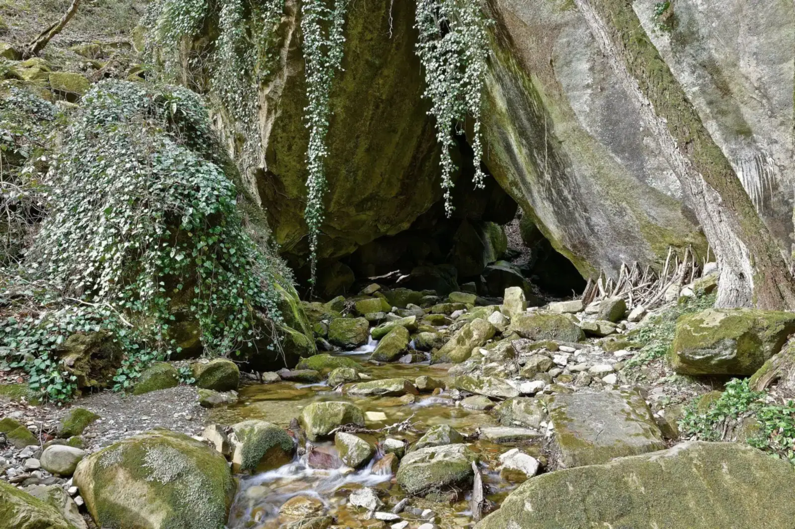
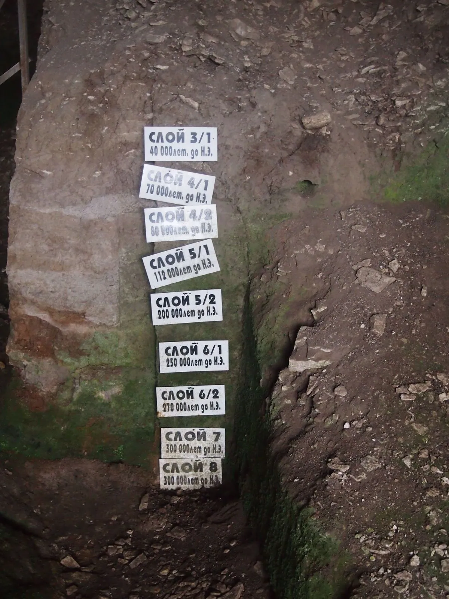
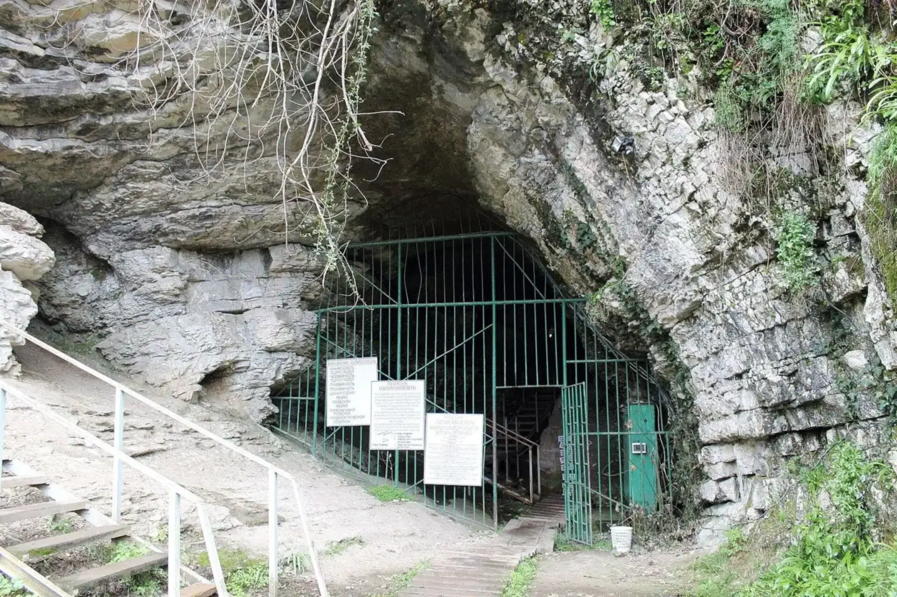
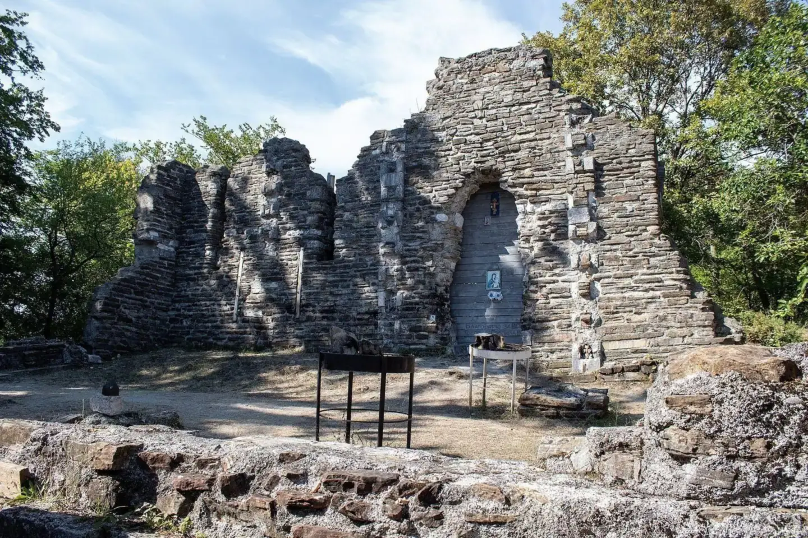
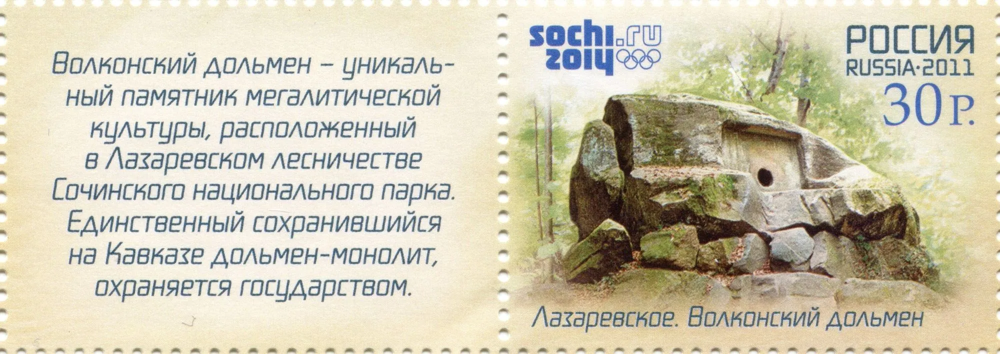
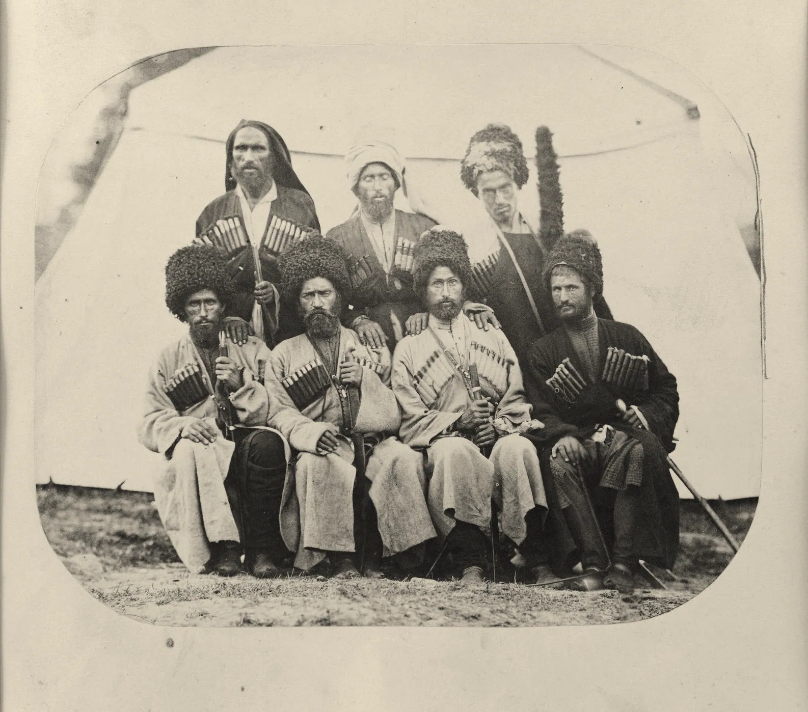

[шумит ручей Годлик]
Волконское ущелье. Чуть ниже по течению стоит дольмен: ему 4–5 тысяч лет
Фото: Aleda12, 2020, CC BY-SA 4.0
Пролог
70 000
До 1838 года
До форта здесь тысячи лет жили люди — и оставили следы в камне.
Ахштырская пещера · Волконское ущелье · гора над Лоо






- Стена раскопа в Ахштырской пещере. Таблички подписывают слои: чем ниже, тем древнееЛистайте: камера поднимается от древних слоёв к новым. Шкала слева логарифмическая, каждое крупное деление в 10 раз ближе к нам. Фото: Codwiki, 2014, CC BY-SA 3.0
- Около 70 000 лет назад в пещере над Мзымтой жили неандертальцы, 30–35 тысяч лет назад — люди современного типаВход в Ахштырскую пещеру, 185 м над морем. Фото: SKas, 2016, CC BY-SA 4.0
- Бронзовый век, 4–5 тысяч лет назад: на Западном Кавказе строят дольмены. Волконский дольмен, снимок 1980 годаАвтор съёмки неизвестен, PastVu № 731989
- Тот же дольмен в 2017 году. Кадры совмещены по порталу и круглому отверстиюФото: Helengorl, 2017, CC BY-SA 4.0
- X–XII века: христианский храм на горе над Лоо. Цветной снимок Сергея Прокудина-Горского, 1912 годБиблиотека Конгресса США, общественное достояние; PastVu № 953285
- Руины храма в 2020 году. Ракурс близкий к снимку 1912 года, но не тот жеФото: Elodyanov, 2020, CC BY-SA 4.0
- 1829: по Адрианопольскому миру Османская империя уступает этот берег России. Шапсуги, садзы и убыхи в договоре не участвовали«Собрание черкесских князей в долине реки Сочи», литография по рисунку Григория Гагарина, 1840–1841. Общественное достояние
- 1838: в устье реки Сочи высаживается русский десант. С этого начинается глава 1
Что это
Предыстория длиннее истории
У Сочи есть предыстория, которая длиннее истории города. В ущельях и на горах вокруг него сохранились каменные гробницы — , пещера, где люди жили десятки тысяч лет назад, и руины христианского храма, которому около тысячи лет. Всё это старше русского форта 1838 года, с которого принято начинать историю Сочи.
В прологе три места: Ахштырская пещера над Мзымтой, Волконский дольмен в Лазаревском районе и руины храма на горе над посёлком Лоо. Все они старше русского форта 1838 года.
- Где
- Адлерский и Лазаревский районы Сочи, Лоо
- Когда
- от ≈70 000 лет назад до 1838 года
- Кто
- неандертальцы, люди современного типа, строители дольменов, христиане Средневековья, шапсуги, садзы, убыхи
- Сейчас
- памятники под охраной государства, дольмен — в Сочинском национальном парке
Как это появилось
Пять слоёв одного берега
≈70 000 лет назад
Самая глубокая страница — Ахштырская пещера над рекой Мзымтой. Люди поселились в ней около 70 тысяч лет назад: это были неандертальцы. Потом, 30–35 тысяч лет назад, пещеру занял человек современного типа. здесь толщиной до пяти метров: от до раннего Средневековья. Для науки пещеру открыл в сентябре 1903 года французский исследователь пещер Эдуар-Альфред Мартель вместе с проводником Гавриилом Ревинко из Казачьего Брода. Первые раскопки в 1936–1938 годах провёл археолог Сергей Замятнин.
4–5 тысяч лет назад
Четыре–пять тысяч лет назад, в бронзовом веке, на Западном Кавказе строили — гробницы из каменных плит, чаще всего с круглым отверстием в передней стене. Всего известно около 3 000 дольменов, учёные изучили не больше 6 % из них. Кто именно их строил, наука точно не знает: письменных источников нет, а большинство дольменов никогда не раскапывали. Самый необычный из сочинских — Волконский: его камера не сложена из плит, а вырублена прямо в скале.
X–XVI века
В Средние века берег был частью христианского мира. Здесь влияли Византия, затем Абхазское царство и Грузия. Храм на горе над Лоо относят к X–XII векам. Он построен по образцу Бзыбского храма в Абхазии. В XIV веке храм восстановили, а в XV–XVI веках переделали в крепость. Руины откапывала археологическая экспедиция Уральского университета под руководством Б. Б. Овчинниковой (1987–1997).
XIX век
К XIX веку побережье населяли народы абхазо-адыгской языковой семьи: шапсуги, садзы (джигеты), . Земли убыхов лежали на месте нынешних Центрального, Хостинского и Лазаревского районов Сочи. Убыхи говорили на языке без письменности: его знали только на слух и передавали из поколения в поколение. Эти же земли в 1829 году по Адрианопольскому миру перешли от Османской империи к России. Договор заключили две империи; сами горские общества в нём не участвовали.
1838
Так на побережье сошлись несколько пластов прошлого: доисторический, византийско-грузинский и горский. Следующий — русский. В 1838 году в устье реки Сочи высадился десант. К событиям 1864 года, когда большая часть убыхов покинула родину и переселилась в Османскую империю, мы вернёмся в главе о Красной Поляне.
4–5 тысяч лет
«Единственный сохранившийся на Кавказе дольмен-монолит, охраняется государством.»
Текст на купоне почтовой марки «Волконский дольмен», Почта России, 2011
Галерея
Пещера, дольмены и храм сегодня
На что посмотреть на месте
Пять деталей, которые легко пропустить
Круглое отверстие в стене дольмена
Это вход в гробницу: в Волконском дольмене он 45–50 см в поперечнике, протиснуться можно только ползком. В других дольменах отверстие закрывала каменная «пробка». На Волконском дольмене её нет.
Камера, вырубленная в скале
Волконский дольмен — монолит: скала размером примерно 17 × 7 × 6 метров, в ней выбрана внутренняя камера высотой около полутора метров. Стены не отшлифованы — возможно, работу не закончили.
Таблички на стене раскопа в Ахштырской пещере
Каждая табличка обозначает слой: чем ниже, тем древнее. Слои датируют от среднего палеолита до раннего Средневековья. Все эти тысячи лет уместились в слой толщиной около пяти метров.
План Лооского храма на земле
От стен сохранились фундаменты и куски кладки, но план читается: три продольные части храма () с тремя полукруглыми нишами алтаря и следами двух столбов. Белые облицовочные плиты когда-то обжигали снаружи, чтобы стена была ровного белого цвета.
Запах сероводорода у Волконского дольмена
В нескольких шагах от дольмена на склон ущелья выходит источник сероводородной воды — такой же, благодаря которой известна Мацеста. Пить из него не советуют: минерализация высокая.

Источник: почтовая марка
«Волконский дольмен — уникальный памятник мегалитической культуры, расположенный в Лазаревском лесничестве Сочинского национального парка. Единственный сохранившийся на Кавказе дольмен-монолит, охраняется государством.»
Скан: Andrew Krizhanovsky, общественное достояние
- Кто говорит
- Государство: марку выпустила Почта России к Олимпиаде 2014 года.
- Что проверить
- «Единственный на Кавказе» — сильное слово. Национальный парк пишет осторожнее: единственный на Западном Кавказе.
Значение для Сочи
Побережье было обжитым краем задолго до курорта и крепости: в Сочи хранятся следы древних культур, христианского Средневековья и горских народов.
Значение для России
В России соединились земли, где веками жили разные народы; их наследие — часть общей истории страны и охраняется государством как памятники.
Раздел курса: 1. Что такое Россия
Ценность: единство многообразия

Факт, который мало кто знает
Убыхский язык считается рекордсменом по числу согласных: около 80 (лингвисты насчитывают 84, из них четыре встречаются только в заимствованных словах), а гласных всего два–три. Убыхи жили там, где сегодня Сочи. Последний носитель языка, Тевфик Эсенч, умер в 1992 году в Турции. Благодаря записям Жоржа Дюмезиля и других лингвистов язык описан подробно, хотя говорить на нём уже некому.
Группа убыхов, 1864. Государственный исторический музей, общественное достояние
Надпись на надгробии Тевфика Эсенча
«Здесь лежит Тевфик Эсенч, последний убых, обессмертивший убыхский язык, писавший и говоривший на этом языке»
Vubıh dilini ölümsüzleştiren bu dili yazıp konuşabilen son Vubıh
Деревня Хаджиосман, Турция. Перевод по статье «Эсенч, Тевфик» в «Википедии»; фотографию надгробия мы не видели
Что вы узнали
Три вещи о берегу до 1838 года
Люди здесь очень давно
Люди жили вокруг Сочи десятки тысяч лет: в Ахштырской пещере — уже около 70 000 лет назад, а слои раскопа можно прочитать, как страницы.
Дольмен — гробница
Дольмены — гробницы бронзового века, а не «домики великанов»; Волконский дольмен вырублен в скале целиком и остаётся единственным таким памятником на Западном Кавказе.
Берег не был пустым
До русского форта побережье было обжитым: по нему проходили византийская и грузинская культуры, жили шапсуги, садзы и убыхи, чей язык исчез только в 1992 году.
Проверьте себя Почему Волконский дольмен называют монолитом?
Он не сложен из плит, как большинство дольменов: его камеру вырубили прямо в скале, то есть весь дольмен — один камень.
Источники главы 16 публикаций, от энциклопедии 1901 года до сайта национального парка
- Волконский дольмен — Википедия
- Дольмены Западного Кавказа — Википедия
- Экологическая тропа «Волконское ущелье» — Сочинский национальный парк
- Экологическая тропа «Краснополянские дольмены» — Сочинский национальный парк
- Ахштырская пещера — Википедия
- Akhshtyrskaya Cave — Wikipedia
- Лооский храм — Википедия
- Сочи — Википедия, раздел «История»
- Убыхи — Википедия
- Убыхский язык — Википедия
- Ubykh language — Wikipedia
- Ubykh people — Wikipedia
- Эсенч, Тевфик — Википедия
- Убыхи — Энциклопедический словарь Брокгауза и Ефрона, т. XXXIV (1901), Викитека
- Мухаджирство — Википедия
- Адрианопольский мирный договор (1829) — Википедия